Redesigning Dashboard Designer
Jul 2025 - Feb 2026
Figma
UI-UX Designer, Design System, Usability Testing
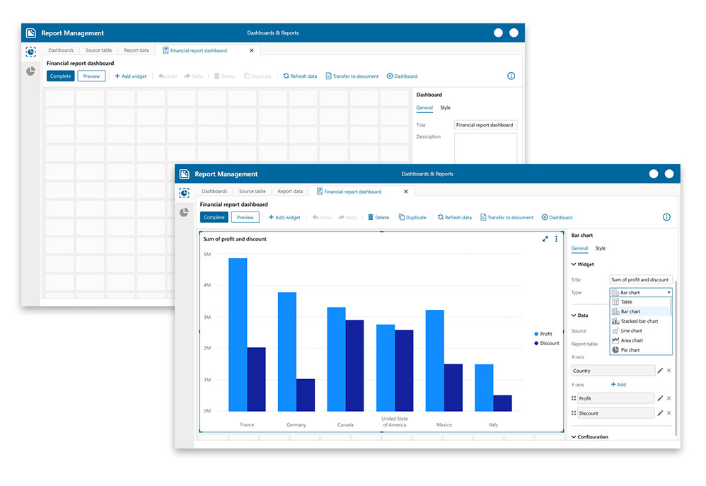
Rethinking a legacy Windows reporting tool to give analysts a faster, more intuitive way to build and present data dashboards.
Platform: Windows desktop app
Type: End-to-end redesign
Focus:Canvas interaction · Data binding · Customization
A Capable Platform Hindered by Usability Barriers
While the legacy Dashboard Designer offered robust reporting capabilities, its interface introduced significant friction into the user workflow. Fundamental limitations—such as fixed frame layouts and restricted widget placement—impeded customization. Furthermore, core actions like data binding and chart selection lacked an intuitive flow, resulting in cognitive overload as users navigated between fragmented frames. The widget addition process compounded this friction by utilizing an uniconic, numbered dropdown that demanded prior system familiarity.
Consequently, constructing even rudimentary dashboards imposed a disproportionate cognitive and operational burden. Additionally, the absence of global styling controls led to visually inconsistent outputs, preventing users from creating cohesive final designs.
The canvas had no grid or alignment guide. Widgets were placed in fixed frames, with their position and size resized manually rather than through direct manipulation—making spatial reasoning nearly impossible.
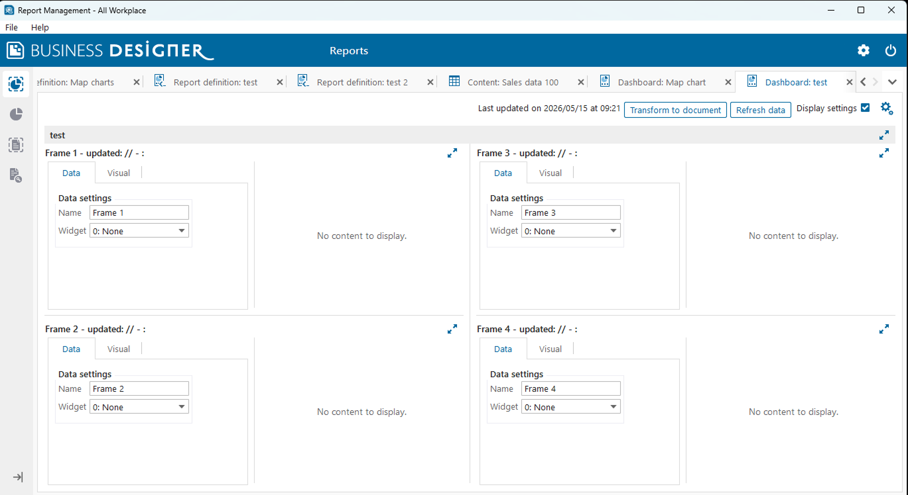
Adding a widget required selecting from a numbered dropdown (e.g. "3: Pie Chart") with no icons. Users with less experience had to rely on memory or trial and error to identify the right type.
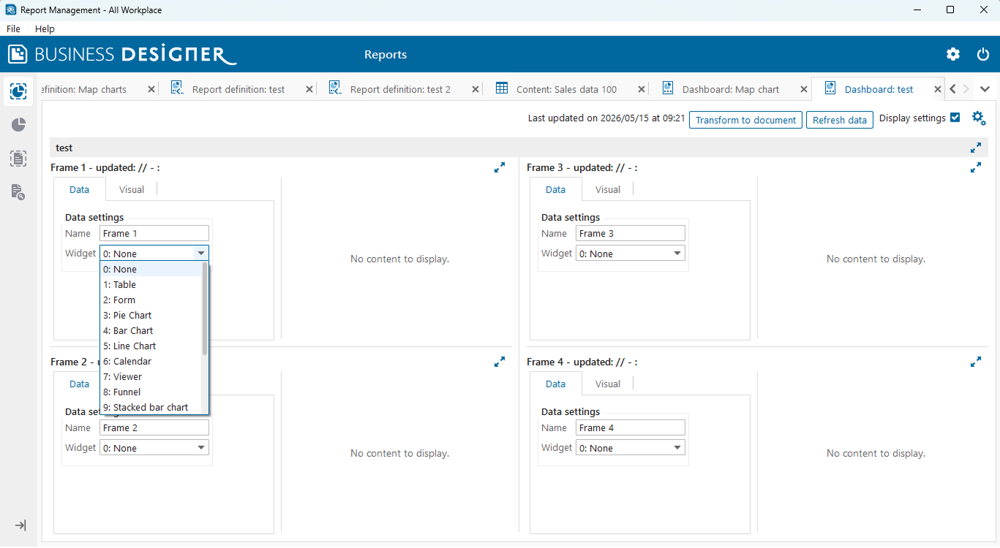
Data and visual configuration were split across separate tab. Changing a chart type could mean redoing the data connection.
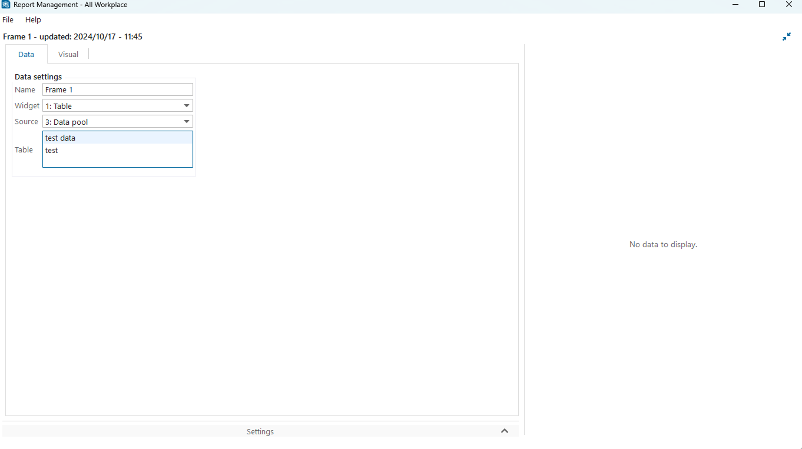
No style controls existed for widgets or the dashboard itself. Teams could not apply brand colors, adjust typography, or control the visual hierarchy of their reports.
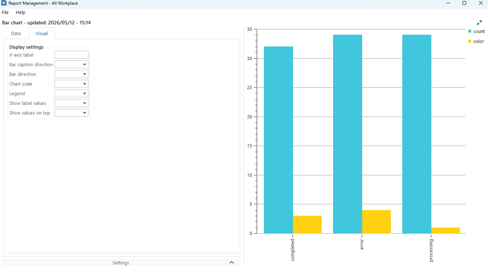
Designers had no way to preview the dashboard as an end user would see it without leaving the designer entirely adding publishing overhead to every iteration cycle.
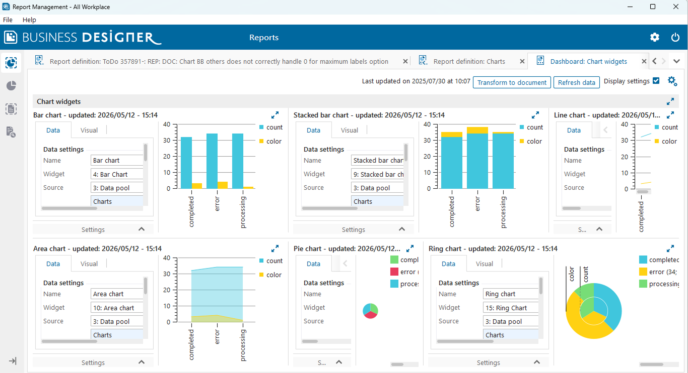
There was no way for designers to provide end users with the ability to filter dashboard data interactively. Users had to rely on the designer to create separate dashboard versions for different data views.
Cross-product component dependencies Several UI components used in the Dashboard Designer were shared across multiple products in the platform. This meant that any new feature or visual change had to be carefully evaluated to ensure it would not unintentionally break or alter the behavior of those components in other products. Each design decision required close coordination with the development team to isolate changes and avoid side effects across the wider system.
The redesign kept the familiar desktop environment while making the canvas much simpler and more intuitive to use. The main goal was to let users do as much as possible directly on the canvas. Placement, resizing, data binding, and styling could all be done in place, without switching to another page or tab for configuration.
A structured grid replaced the free-form frame system, giving users a built-in alignment guide and making it easy to produce clean, professional layouts without manual effort.
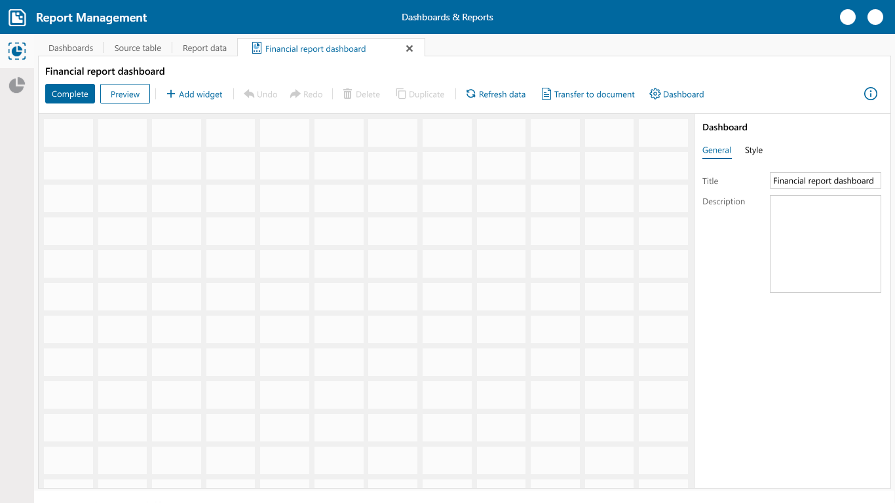
A new "+Add widget" menu presents all widget types with icons and clear labels, Table, Pie chart, Bar chart, Gauge, Map, Filter, Button, and more — replacing the opaque numbered dropdown entirely.
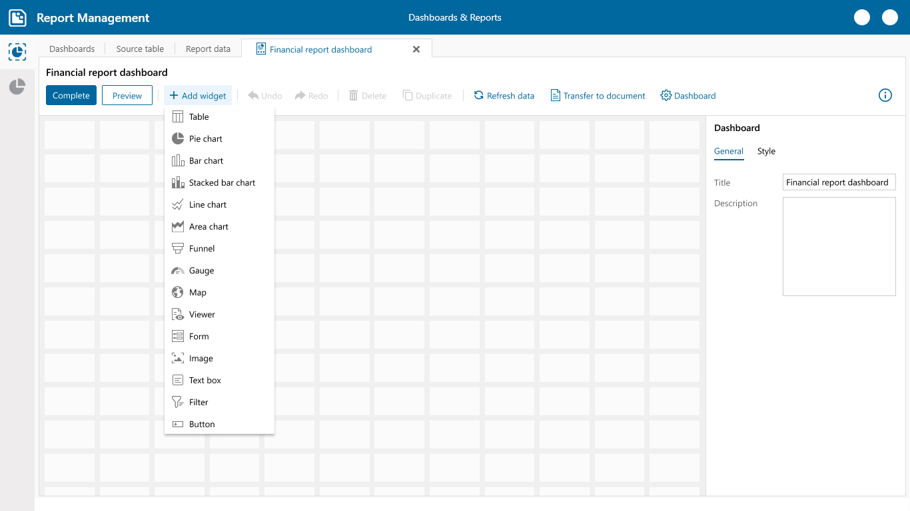
Widgets can be moved by dragging and resized by pulling their edges directly on the canvas. The fixed-frame limit was removed entirely, allowing data-dense dashboards that scale with reporting needs.
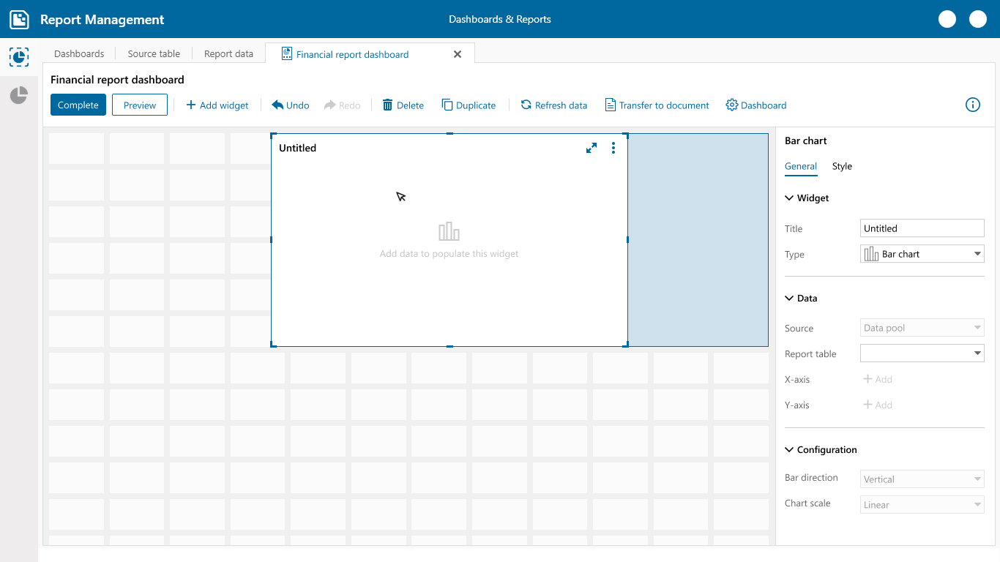
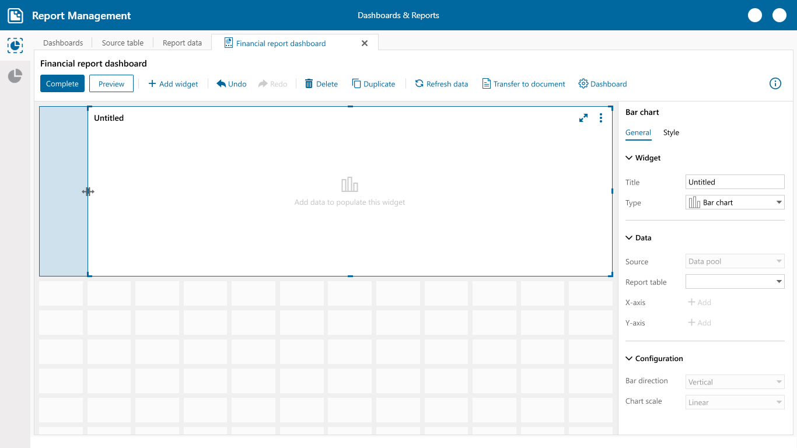
Widgets can now be duplicated or deleted directly from the toolbar. This speeds up dashboard building when similar widgets are needed, and simplifies clean-up without navigating away from the canvas.
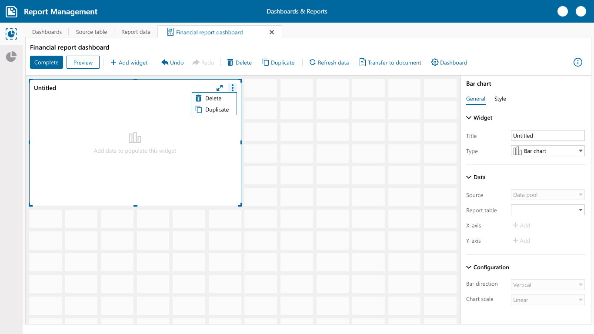
Data configuration moved to a unified right-hand panel. Users select a report table and assign columns to the widget using a searchable dropdown, all without leaving the canvas. The widget updates live.
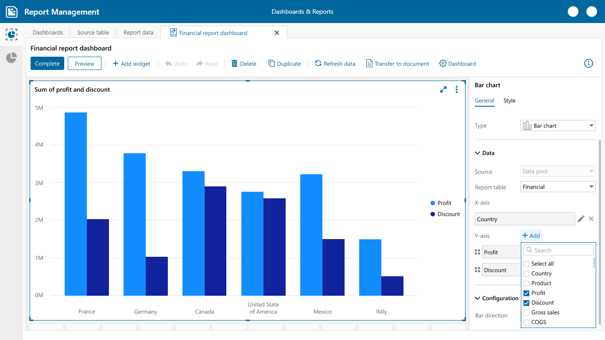
The widget type can be changed at any time from the properties panel without losing data bindings. Switching between Bar, Line, Pie, Table, and others is a single dropdown selection.
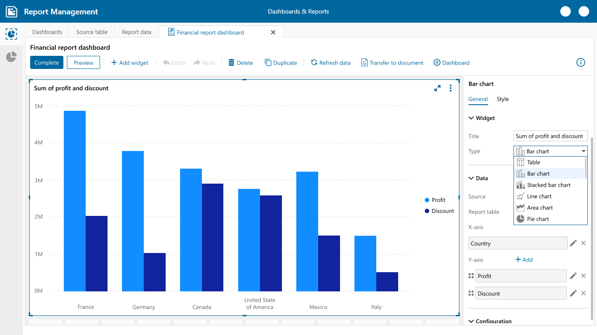
A Style tab at the dashboard level controls background color and grid appearance. Each widget has its own Style tab for fonts, colors, borders, legends, and data labels, giving teams full control over visual identity.
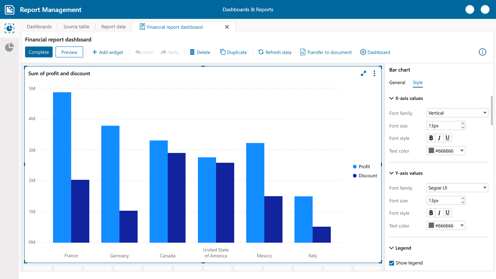
A dedicated Filter widget type can now be added directly to the dashboard, allowing designers to give end users the ability to interactively filter data across the dashboard without needing separate dashboard versions for different data views.
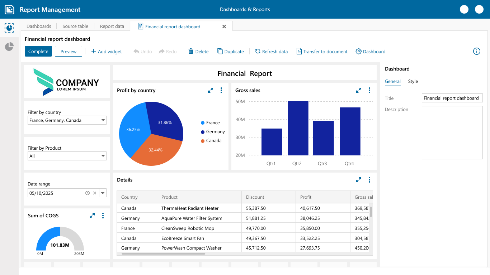
A dedicated Preview button instantly switches to the end-user view of the dashboard without leaving the designer — eliminating publish-to-verify cycles and making iteration immediate.
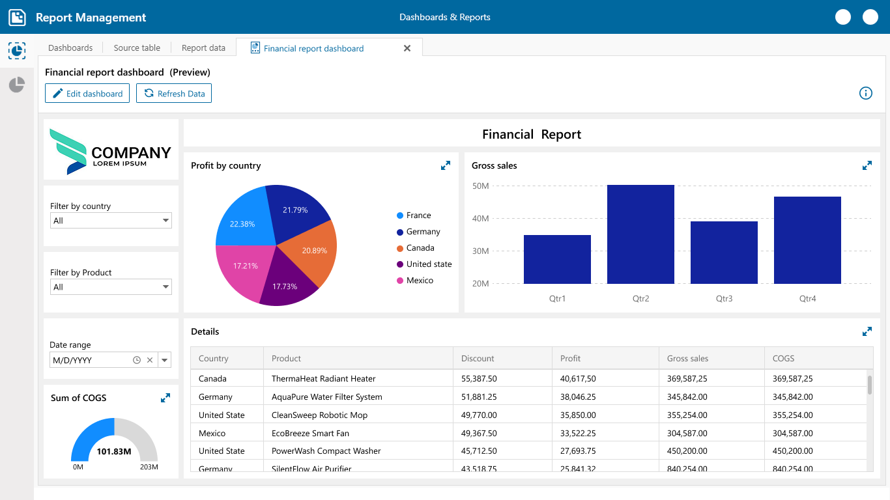
A foundation for faster, higher-quality reporting